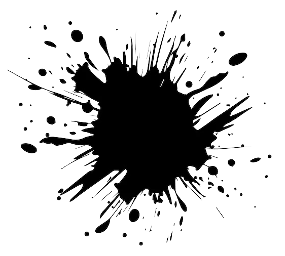

Черновик статьи в газету. Должен был быть. Не вышло...
НЕВИДАННОЕ ЧУДО ВЕКА! НЕБЕСНЫЙ ТЕАТР ГРАФА ВАЛЕМОНТЕ!
Спешите видеть, почтеннейшая публика... Спешите видеть то, что видели уже сто раз. Платок, кольцо, голубь из шляпы. Публика зевает уже на третьем фокусе, а нам всё положено называть это «чудом века». Пятый год одни и те же слова, только рифмы меняю, чтобы самому не так тошно было их выводить.
Да и кому я это пишу? В этом уезде и грамотных-то по пальцам перечесть, а те, кто есть, давно всё про нас поняли. Ни одного нового трюка за два года. Реквизит того гляди рассыплется в труху, а на новый ни гроша – хотя откуда бы взяться грошу, если каждый заработанный рубль граф считает своим, а мою долю почему-то называет «жалованьем секретаря». Секретаря! Будто я не сочинил ему пол-биографии из головы, будто не я сделал из потёртого фигляра «графа» и «мистика».
Сижу в этой дыре, среди навоза, комарья и глупых баек про леших, и должен в очередной раз лгать почтеннейшей публике про чудеса – потому что кроме лжи, мне продавать нечего, а есть хочется каждый день, будь оно всё проклято. Валемонте по ночам не спит, всё смотрит в темноту, будто ждёт кого-то или чего-то. Камилла тоже сама не своя, ходит как потерянная. А я один, кажется, во всей труппе ещё помню, что нас разыскивает полиция, и что чуда никакого не будет – будет каземат, если немедленно не придумать что-нибудь получше «эфирного кристалла Ориона».
Знал бы кто-нибудь в столице, каким умом обладает нищий студент, вынужденный сочинять рекламу бродячему фокуснику... Впрочем, кому я вру. Никому бы не было дела. Такому, как я, полагается или пресмыкаться, или красть, или писать вот такое, с позволения сказать, «искусство». Топор мне, положим, без надобности (пока) – но временами я отлично понимаю тех, кому он понадобился.
Порвать. Всё порвать.
